济阳鼓子秧歌获得荣誉
1990年12月获山东省首届农民文化艺术节舞蹈比赛银奖；
1991年参加济南“91时届国际旅游节”开幕式表演；
1991年获首届中国沈阳秧歌节暨全国优秀秧歌大赛优秀表演奖；
1991年济阳区人民政府鼓子秧歌宣传封面展示；
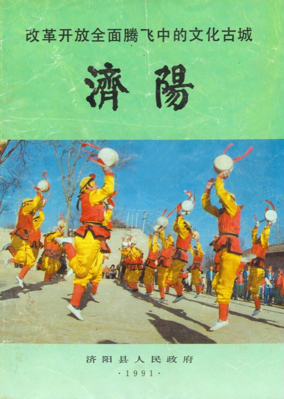图为 1991年济阳区人民政府鼓子秧歌宣传封面
1993年应国际民间艺术组织的邀请，受中国文联的委托赴德、法两国参加国际艺术节和一系列民间艺术庆典活动历时45天，走遍德、法23个城市，演出70余场，被誉为“民间舞蹈之经典”、“迷人的东方芭蕾”；
1996年12月参加首届山东农民文化舞蹈比赛获银奖；
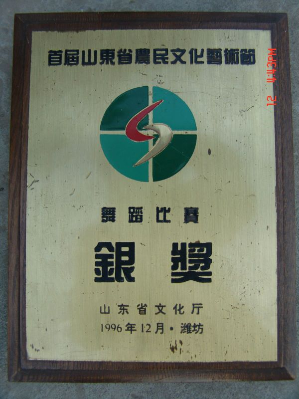图为 1996年12月首届山东农民文化舞蹈比赛银奖
1997年受邀参加全国第三届农业博览会开幕式的表演；
2000年应日本山口氏之邀赴日本演出，进行文化交流；
2003年1月24日登上齐鲁晚报专题新闻；
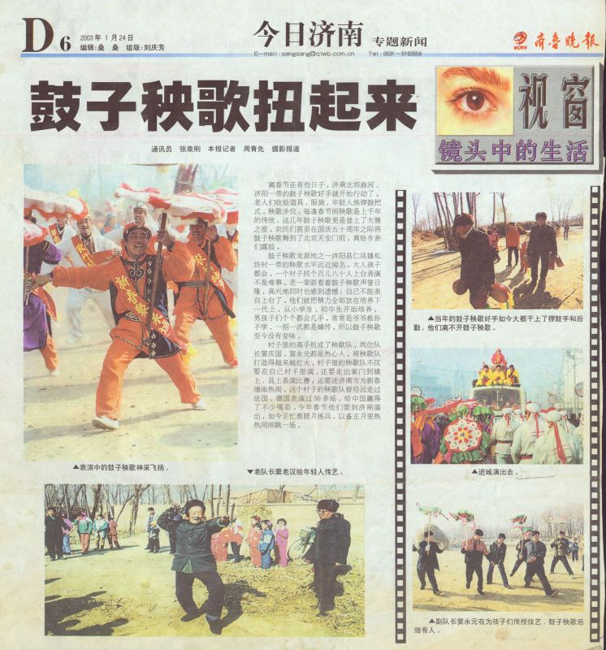图为 2003年1月24日登上齐鲁晚报专题新闻
2004年春节荣获北京市二十一届龙潭庙会民间艺术汇演优秀表演第二名；
2005年获济南市农民文化艺术节文艺汇演金奖；
2005年在山东省农民文化艺术大奖赛上获得特等奖；
2005年8月，受山东省民间艺术家协会的委派，作为山东省唯一代表参加第七届中国民间文艺山花奖、民间艺术表演奖暨中国民间广场歌舞展演活动，获优秀作品奖；
2006年参加世界文博会开幕式演出;
2006年参加首届山东（国际）文化产业博览会大型文艺晚会《齐风鲁韵》；
2006年被列入山东省首批非物质文化遗产保护名录；
2006年1月参加济南市第二届农民文化艺术节文艺会演活动获金奖；

图为 济南市第二届农民文化艺术节文艺会演活动金奖
2006年参加济南市农民文化艺术节文艺会演活动获金奖；
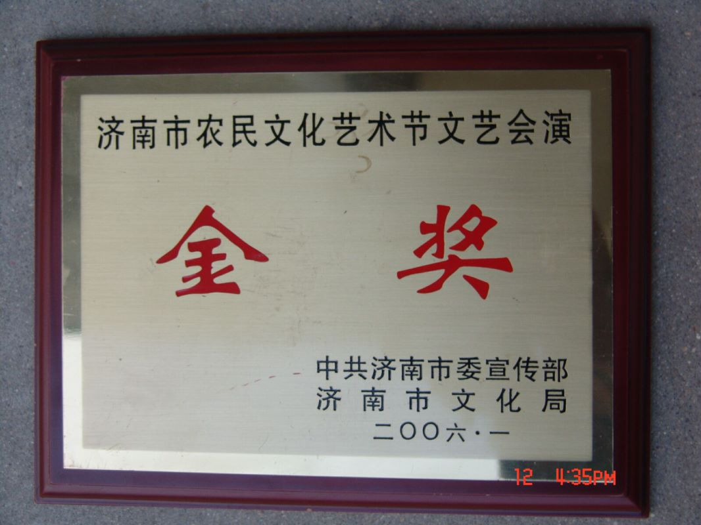图为 2006年济南市农民文化艺术节文艺会演活动金奖
2006年济阳区仁风鼓子秧歌队获省“优秀庄户剧团”称号；
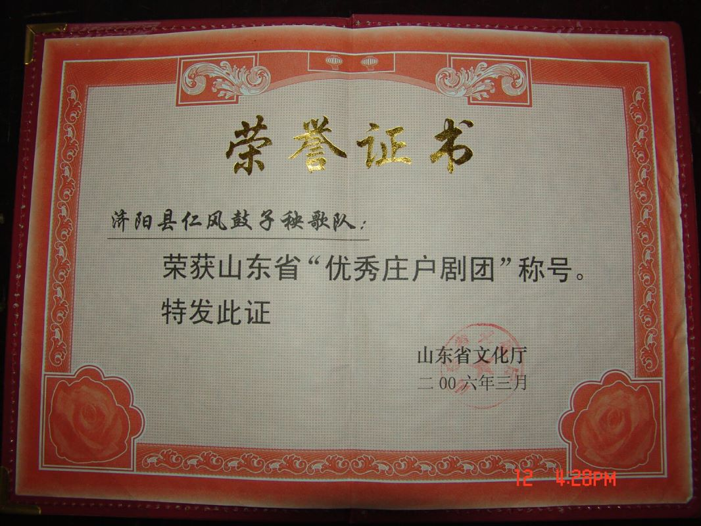图为 2006年济阳区仁风鼓子秧歌队获省“优秀庄户剧团”称号
2007年4月参加中央电视台第四届舞蹈大赛荣获秧歌组第4名;
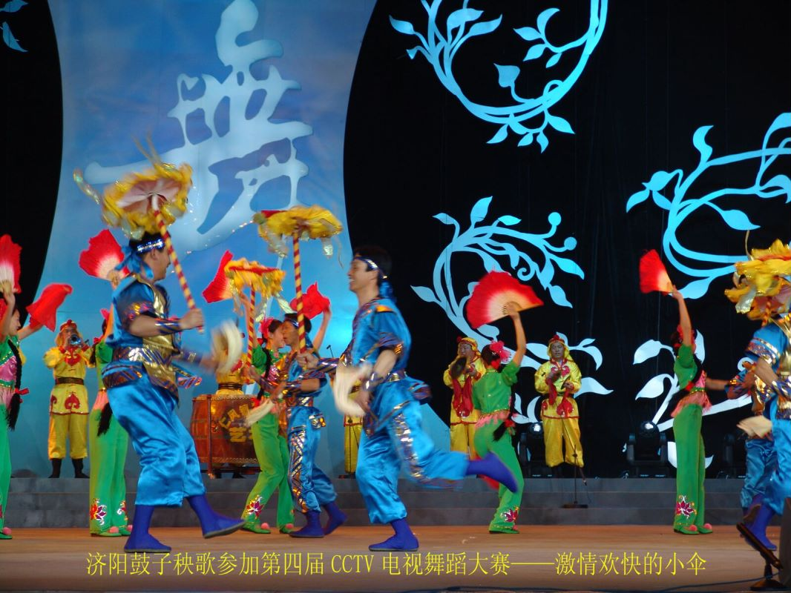图为 参加第四届CCTV电视舞蹈大赛
2007年4月，在“交银理财”杯CCTV全国电视舞蹈大赛中获大秧歌专场第四名，列山东三大秧歌之首；
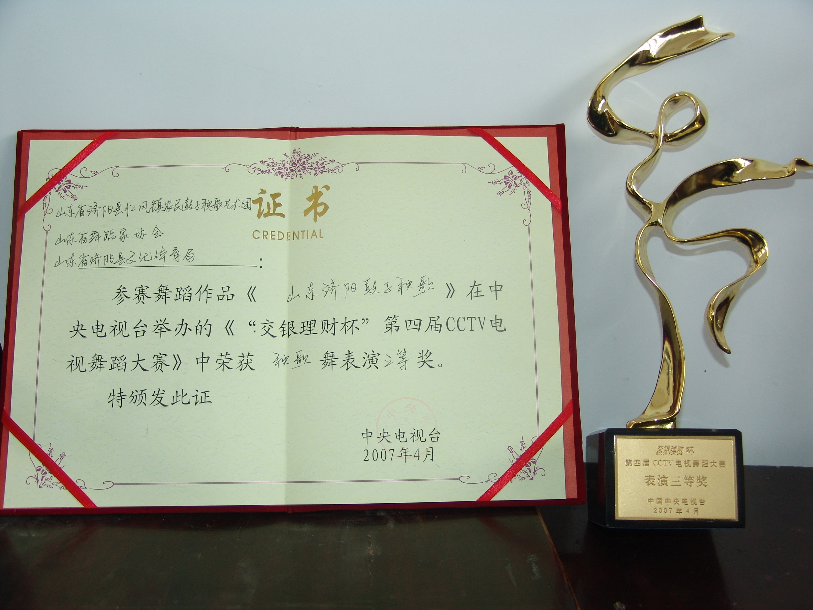图为 “交银理财”杯CCTV全国电视舞蹈大赛中获表演三等奖
2007年参加济南市第三届农民文化艺术节文艺会演获金奖；

图为 2007年济南市第三届农民文化艺术节文艺会演金奖
2008年5月参加全国秧歌节大赛荣获优秀表演奖；
2008年6月，国务院正式批准为国家非物质文化遗产；
2009年10月参加第十一届全运会开幕式表演；
2010 年 5 月，济阳鼓子秧歌参加中原艺术节；
2011年参加了山东省非物质文化遗产博览会开闭幕式文化演出；
2011年参加民间艺术表演大赛；
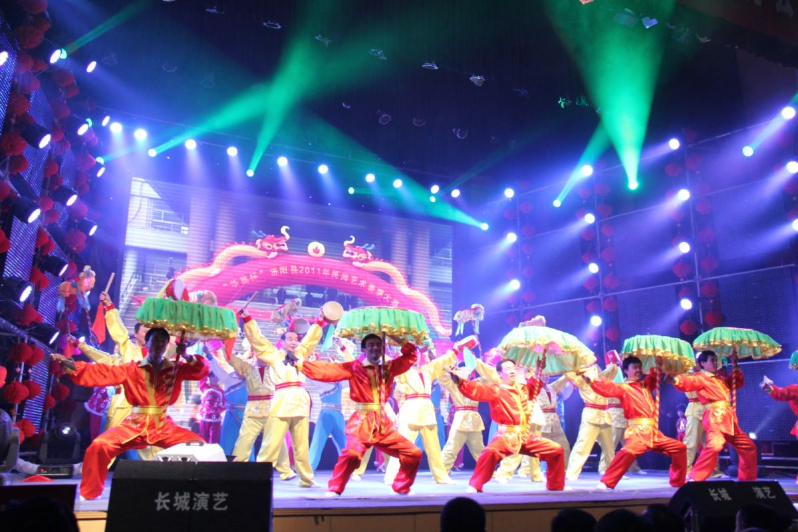图为 济阳区2011年民间艺术表演大赛
2014年11月19日参加中菲文艺交流演出；
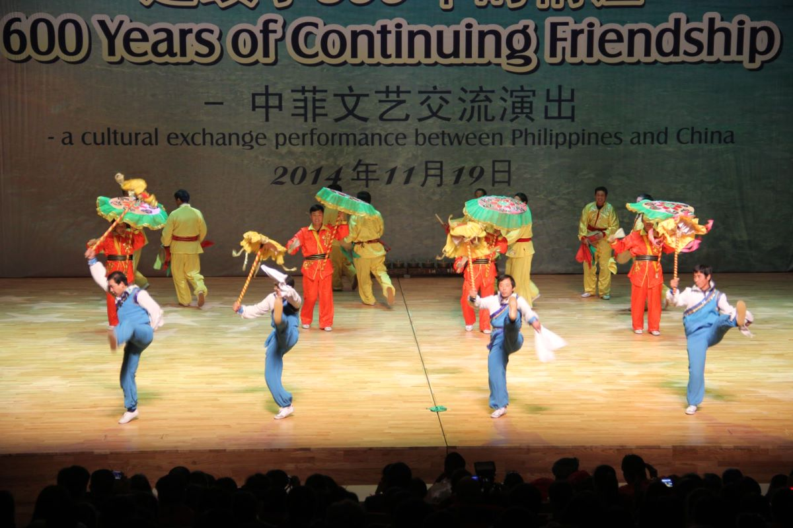图为 中菲文艺交流演出
2015年3月，在“中国（河南.鹤壁）社火艺术节”活动中所表演的《泉城闹春》节目荣获金奖；
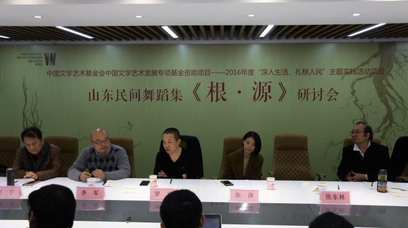图为 山东民间舞蹈集《根·源》研讨会
2017年6月，应邀参加在山东省文化馆举办的“一带一路”非遗交流展演活动；
2017年9月，应邀参加“喜迎十九大·第十届山东省泰山文艺奖·颁奖典礼暨首届秧歌会”演出；
2017年10月，济阳鼓子秧歌表演艺术团作为唯一一支表演队伍赴陕西延安参加“喜迎十九大·全国民间欢庆锣鼓展演”活动；
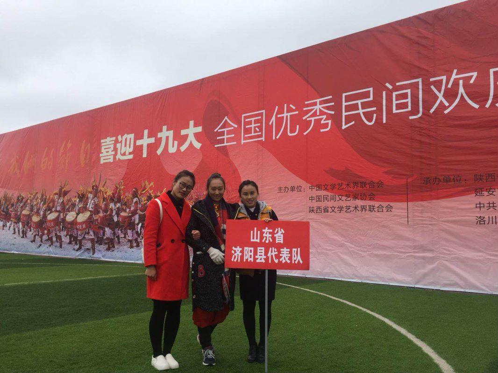图为 艺术团参加“喜迎十九大·全国民间欢庆锣鼓展演”活动
2017年11月，济阳鼓子秧歌又应邀参加第六届中国上海朱泾花灯节演出；
2017年11月，参加“十艺济南”系列文化评选展示活动，获得“最佳节目奖”；
济南市第一、二、三届大型民间艺术汇演一等奖，优秀表演奖；
山东省即济南市14届民间艺术汇演最佳奖；
2018年8月29日、9月14日，先后赴济南、北京参加庆祝改革开放40周年大型山东民间舞蹈诗《俺的山东大秧歌》等系列演出活动；
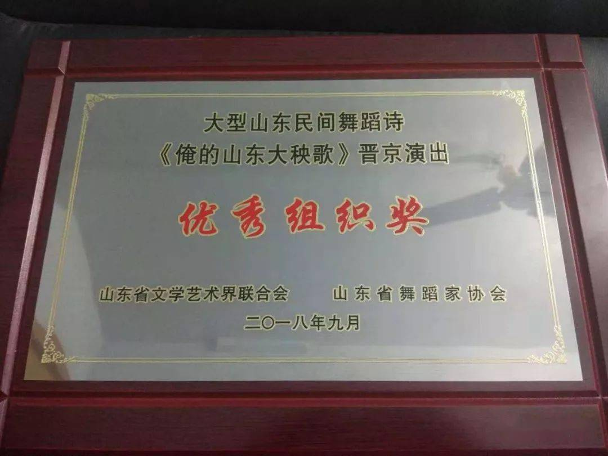图为 大型山东民间舞蹈诗优秀组织奖
2019年参加济南“九一世界国际旅游节”开幕式表演，令三十多个国家的外宾惊叹；
2020年受省文化馆派遣前往潍坊安丘市传承鼓子秧歌、参加元首之约第八届济南国际泉水节、山东省济南国际汇演中心表演节目、山东旅游发展大会暨首届中国国际文化博览会非遗项目展演、中国农民丰收节垛石镇安子坡村表演、第六届中国非遗博览会、济阳区2020年国家扶贫日公益晚会，参与录制济南新闻综合频道《有么说么》节目等；
2021年获得第十四届全运会群众赛事广场舞比赛三等奖；
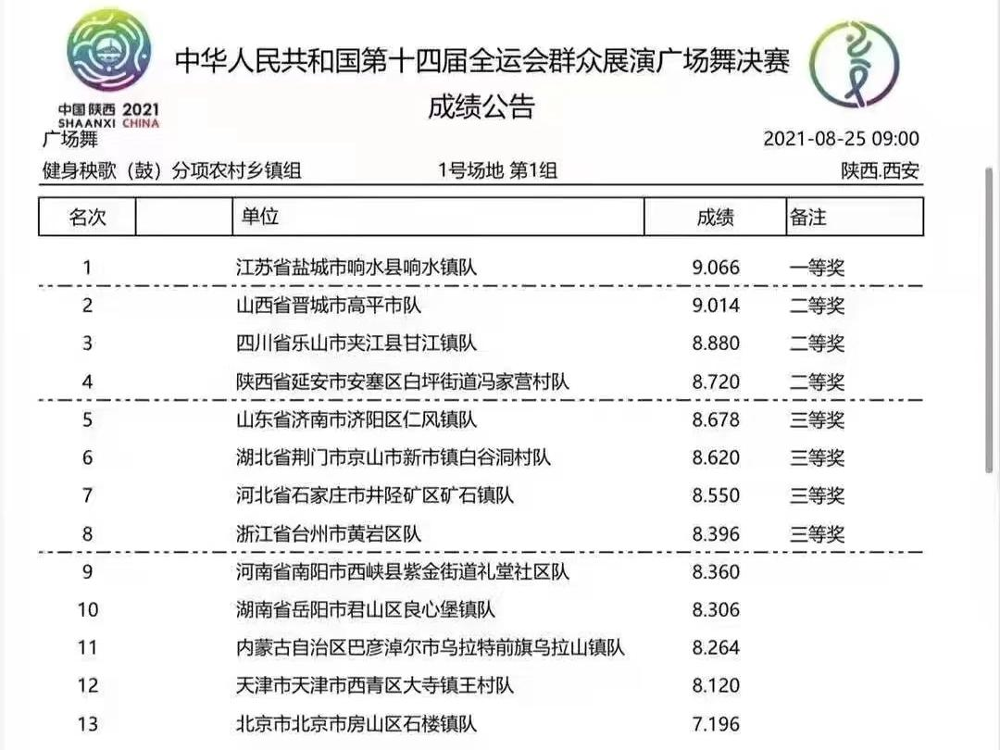图为 中华人民共和国第十四届全运会群众展演广场舞三等奖
2022年1月cctv17频道拍摄的鼓子秧歌专题片《虎虎声威闹虎年》节目，时长50分钟，分别在《央视频》和cctv17播出。